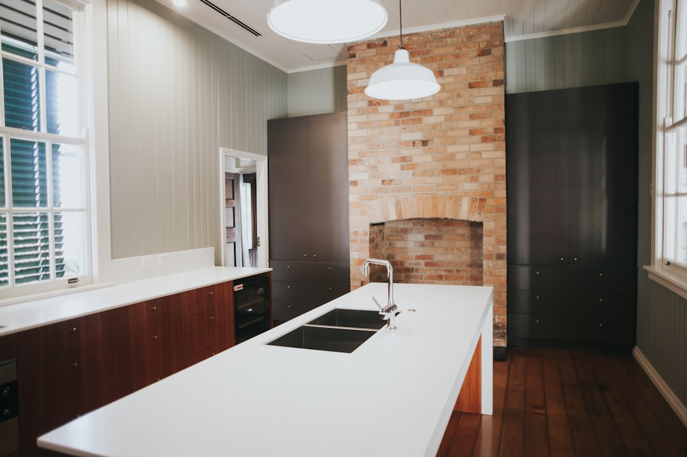

A Brisbane kitchen upgrade should be planned around scope, licensing and material choices before finishes are selected. The source page gives typical project bands of $15,000 to $60,000+, with makeovers often taking 2 to 4 weeks, standard renovations 4 to 8 weeks, and custom projects 8 to 12 weeks. It also says Queensland building work over $3,300 requires a current QBCC licence, so licence checks belong early in the quote process.
For homeowners comparing kitchen renovations brisbane options, the practical starting point is matching budget, layout problems and licensed trade requirements before committing to cabinetry, benchtops or appliances.
Kitchen Renovations Brisbane Explained
Kitchen Renovation Brisbane presents the service as a Brisbane kitchen renovation option for households dealing with outdated layouts, limited storage, worn benchtops and kitchens that no longer function well. The strongest useful signal is not a style promise. It is the combination of stated cost bands, stated renovation timeframes, and the need for properly licensed trades in Queensland.
The page gives a broad cost guide rather than a fixed price list. It says typical Brisbane kitchen work can range from $15,000 to $60,000+, depending on scope. It separates simpler makeovers from standard renovations and custom projects, which helps homeowners avoid comparing a cosmetic refresh with a full redesign as though they are the same job.
Use the page as a starting brief. Before asking for a quote, write down the parts of the kitchen that are failing: storage, workflow, benchtops, lighting, appliance fit, or the overall layout. A quote can only be meaningfully compared when each contractor is pricing the same level of change.
Who This Applies To
This guide applies to Brisbane homeowners who are planning a kitchen refresh, a standard renovation, or a custom kitchen project and want a grounded way to compare quotes. It is especially relevant where the kitchen has a small footprint, poor storage, tired surfaces, or a layout that makes everyday use awkward.
It is less useful for readers seeking a published price for one exact kitchen, because the source page does not provide a fixed package price. It also does not provide suburb-specific pricing, grant rules, or approval thresholds beyond the QBCC licensing point it states. Treat those gaps as questions for the quoting stage rather than assumptions.
- Ask whether the quote covers cabinetry, benchtops, splashbacks, lighting and appliance integration.
- Ask which licensed trades are needed for plumbing or electrical work.
- Ask whether design consultation includes 3D renders and a detailed written quote.
- Ask what warranty applies to workmanship and what is excluded.
Budget Signals Before Style Decisions
The most useful budgeting distinction is scope. A makeover may keep the basic footprint and focus on visible upgrades. A standard renovation can involve more substantial replacement and coordination. A custom project is more likely to involve detailed design, tailored cabinetry and a longer program.
The source page says cabinetry is usually the single largest expense in most kitchen projects, accounting for 25 to 40 percent of the total budget. That does not mean cabinetry should be cut first. It means storage requirements, drawer hardware, corner solutions and pantry design need to be decided before comparing the headline total.
Benchtop selection also changes the conversation. The source page notes silica-free stone alternatives, durable laminate and premium porcelain as options, and says traditional engineered quartz is now banned due to silicosis concerns. A practical quote should name the proposed surface category rather than hiding it under a vague allowance.
Timing And Quote Comparison
The source page gives three timing bands: 2 to 4 weeks for makeovers, 4 to 8 weeks for standard renovations, and 8 to 12 weeks for custom projects. Those bands are useful because they force the scope question early. A homeowner who expects a fast makeover but asks for custom cabinetry, lighting changes and appliance integration may be describing a longer project.
Quote comparison should start with exclusions. Check whether removal, plumbing, electrical work, splashbacks, lighting, appliances, design revisions and warranty terms are included. A lower number is not necessarily better if it leaves important work outside the written scope.
For another editorial view of a related local search phrase, see this Brisbane kitchen reno guide. Use cross-checking like this to build better questions, not to assume every project will fall into the same price or timeline.
Licensing, Materials And Finish Quality
The source page states that every specialist it refers to holds a current QBCC licence and that this is required for building work over $3,300 in Queensland. It also says licensed plumbers and electricians are required by Queensland law. For a homeowner, that makes licence and trade allocation a quote issue, not an afterthought.
Finish quality is not only about the door profile or benchtop colour. The page mentions Blum certified installers for soft-close drawers and hinges, walk-in pantry designs, pull-out systems, corner carousel units and overhead storage. Those details should be written into the quote where they matter, because they affect daily use long after the renovation is complete.
Lighting deserves the same discipline. The page refers to LED under-cabinet lighting, pendant fixtures and task lighting. Ask where each light type will be located, how it supports preparation zones, and whether electrical work is included in the quoted scope.
- Define the fault. Write down whether the main problem is storage, layout, benchtops, lighting, appliance fit or general age.
- Set the scope. Decide whether the brief is a makeover, standard renovation or custom project before comparing prices.
- Check licensing. Ask for the QBCC licence position and identify which plumbing or electrical trades are required.
- Compare inclusions. Review each quote against the same inclusions, exclusions, materials, timing and warranty terms.
| Project type | Source timing guide | Quote focus |
|---|---|---|
| Makeover | 2 to 4 weeks | Confirm what stays, what is replaced, and whether surfaces or hardware are included. |
| Standard renovation | 4 to 8 weeks | Compare cabinetry, benchtops, splashbacks, lighting, trade work and warranty terms. |
| Custom project | 8 to 12 weeks | Check design detail, material selections, storage systems, appliance integration and staged timing. |
Common questions
How much does a Brisbane kitchen renovation usually cost? The source page gives a typical range of $15,000 to $60,000+, depending on scope. It also says budget, mid-range and premium projects can differ substantially, so a written scope is needed before prices can be compared.
How long should homeowners allow for the work? The stated timing guide is 2 to 4 weeks for makeovers, 4 to 8 weeks for standard renovations, and 8 to 12 weeks for custom projects. The right band depends on how much is being changed.
What should be checked before accepting a quote? Check the QBCC licensing position, trade requirements, inclusions, exclusions, material selections, warranty terms and whether design items such as 3D renders are included. Ask especially about cabinetry, benchtops, lighting and appliance integration.
Are silica-free benchtop options relevant? Yes. The source page says traditional engineered quartz is banned due to silicosis concerns and lists silica-free stone alternatives, laminate and porcelain as options to discuss during selection.
This guide covers Brisbane kitchen renovation planning, quote checks, licensing questions, costs, timing, materials and scope comparison.